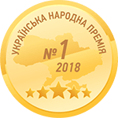

<section class="section-5">
    <div class="container">
        <h2 class="section-5__title">Кто мы такие и почему  всё это рассказываем_</h2>
        <ul class="section-5__articles">
            <li class="awards">
            <span class="awards__tag">Награды</span>
            <ul class="awards__award">
            <li class="award one">
                <h3 class="award__title">Best IT Eduсation 2015</h3>
                <p class="award__text"><span class="award__small-title">Награждена компания GoIT</span> 
                    за вклад в подготовку сильных Junior-специалистов</p>
                
            </li>
            <li class="award two">
                <div class="award__container">
                <h3 class="award__title">Ukranian  IT Awards 2016</h3>
                <p class="award__text"><span class="award__small-title">Награжден сооснователь GoIT Андрей Пивоваров</span>
                    за выдающийся вклад в IT-обучение украинских Junior-разработчиков.</p>
                
                </div>
            </li>
            <li class="award three">
                <div class="award__container">
                <h3 class="award__title">Украинская Народная Премия 2018</h3>
                <p class="award__text"><span class="award__small-title">Победа в номинации IT-образование 2018</span>
                    Всеукраинский национальный проект определил GoIT лидером 
                    в отрасли IT образования по итогам проведенного
                    голосования среди потребителей.</p>
                
                </div>
            </li>
            </ul>
        </li>
        <li class="tender">
            <span class="tender__tag">Go for IT</span>
            <h3 class="tender__title">GoIT выиграла тендер  ПР ООН Украина</h3>
            <p class="tender__text">На реализацию социального проекта 
                по бесплатному обучению Frontend. Мы стали самой молодой компанией-партнером ПР ООН. 
                В рамках проекта Go for IT мы обязались обучить Frontend-разработке 300 переселенцев.</p>
        </li>
        <li class="partners">
            <span class="partners__tag">Партнеры</span>
            
        </li>
        </ul>
    </div>
</section>